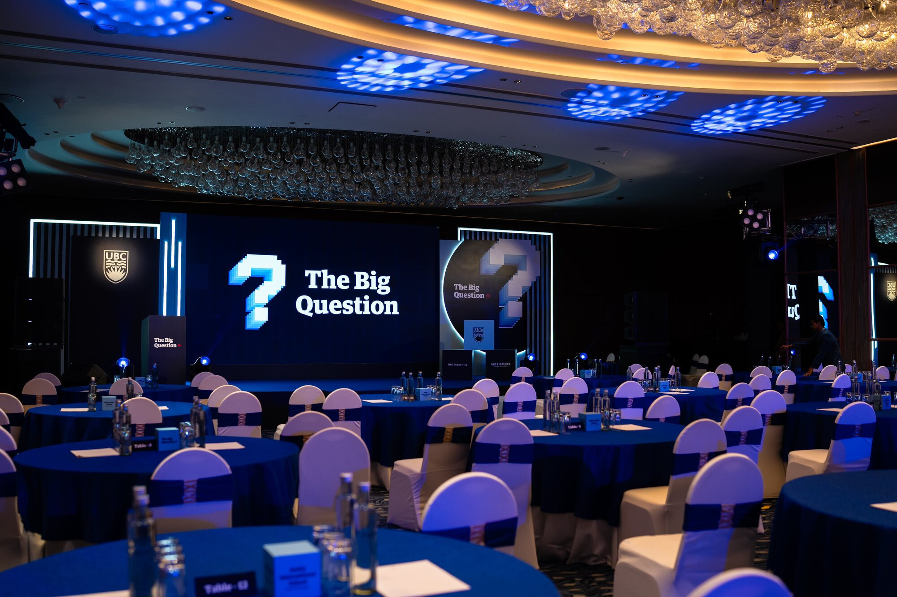
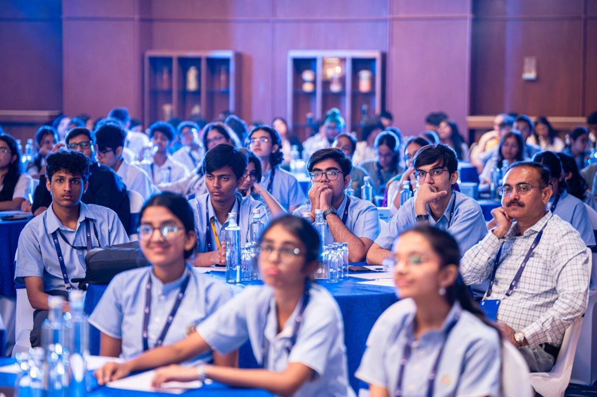
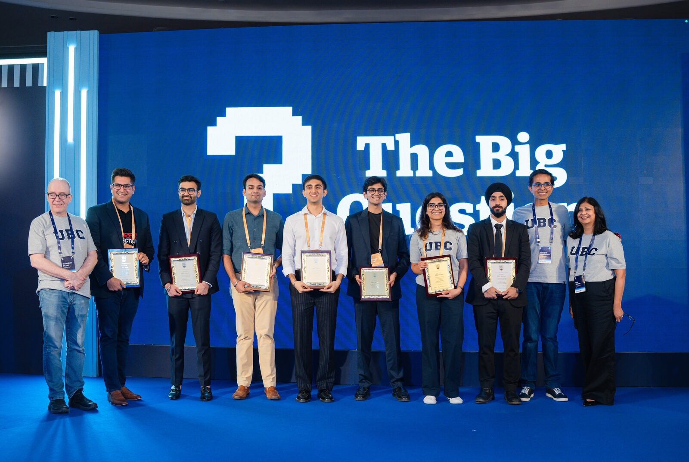
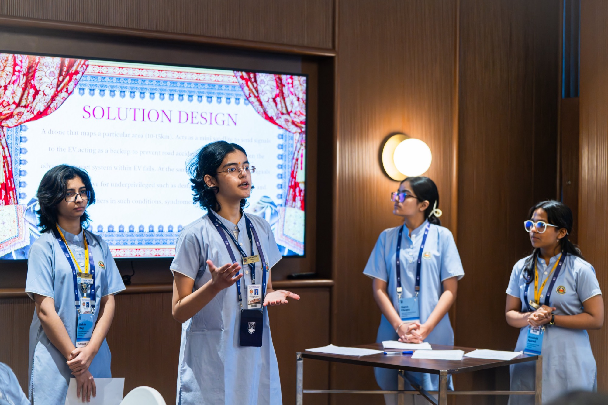
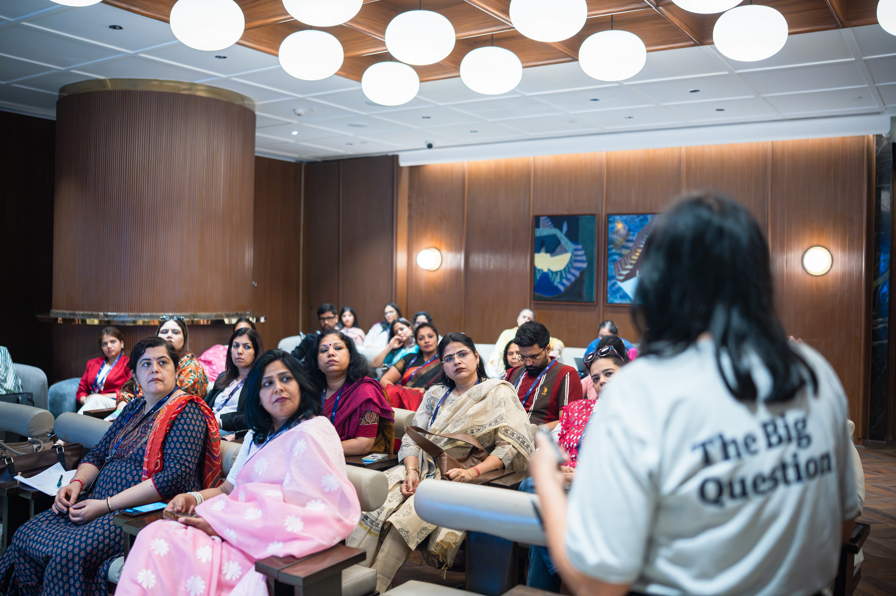
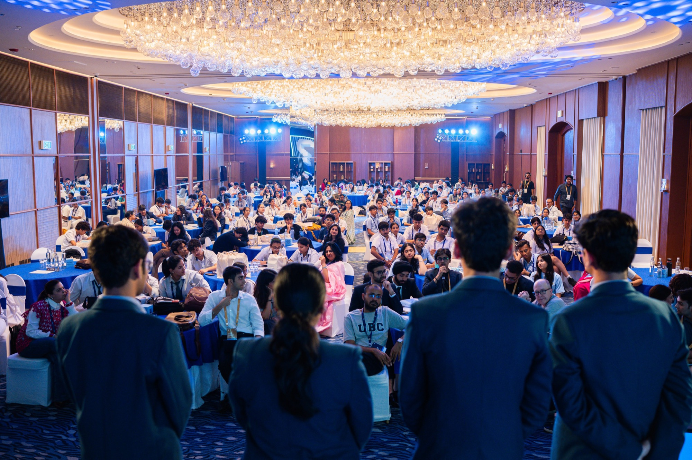
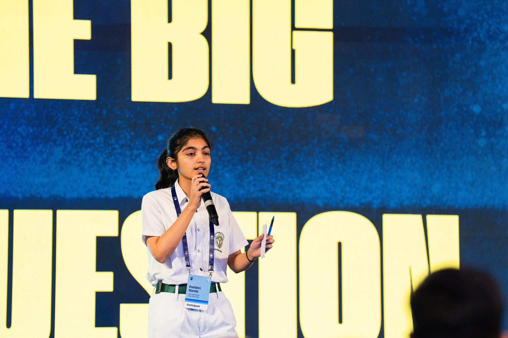
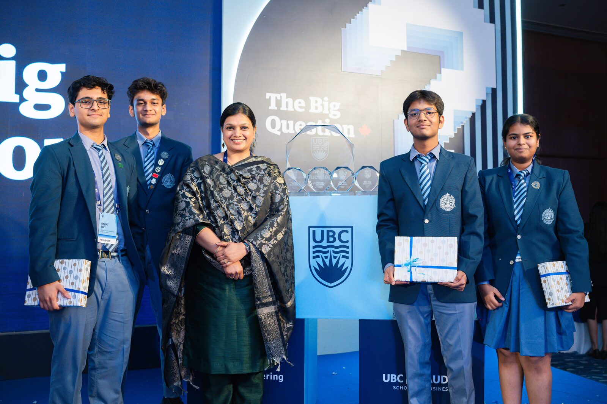
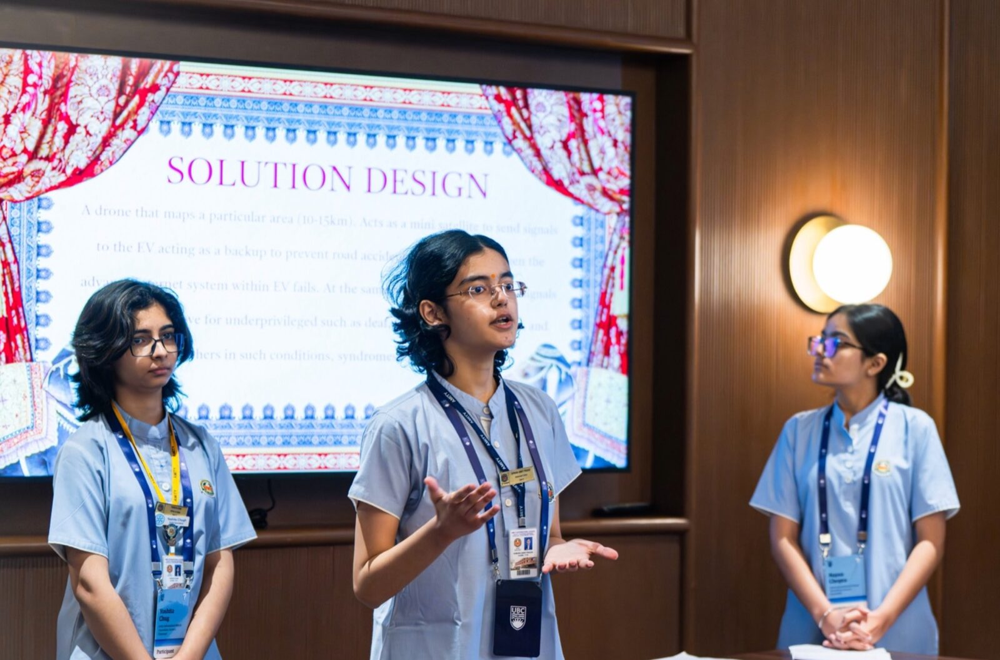

Teams of four from the top schools of New Delhi. Six hours, no internet, no AI. One question: what happens to petrol stations when cars become autonomous?

The brief was two lines: make it IP-worthy and flagship, and make it something UBC can run year on year
The second line is the hard one. Anyone can produce a good day. Something that survives being run again needs a question worth six hours of a sixteen year old’s full attention, and it has to be one they answer themselves.
The real opportunity was building the competition out of UBC’s own values, so the institution could own it
UBC’s vision is “inspiring people, ideas and actions for a better world”, and page five of its strategic plan says the university’s partnerships exist to “carry out innovative, interdisciplinary research, ask big questions, advance knowledge on pressing issues and deliver solutions with broad local and global impact.” The competition was designed to hit as many of those as one room can. The name fell out of the middle of that sentence.
AI was cut because with Gemini and Claude in the room, every team arrives at the same answer
You would be testing the model, not the room. The rule held for six hours with no phones and no internet, and afterwards the students defended it better than we did.
Four days out, Canvas went down and took the entire pre-learning course with it
Canvas is the platform half of North American higher education is enrolled on. I rebuilt all six modules as a static site in a day, wrote a no-op SCORM shim so the courseware would run with nothing behind it, registered a domain and shipped it. The students never knew.
Twenty schools would have been a good day. Thirty-seven of Delhi’s top schools came
Five rooms ran in parallel, one industry each, every team working the same scenario: by 2050 autonomous electric vehicles dominate Indian roads and the businesses built around human driving are running out of road.
Five breakout rooms, five industries that self-driving cars will undo, each still sitting on assets worth reusing
& highway retailCars pick their own charging point on efficiency and fleet coordination, and nobody steps out for snacks. What is left: prime roadside access, grid connections, large sites.
& rest areasPassengers sleep, work and watch films while the car drives through the night, so the stop disappears. What is left: highway frontage, standing buildings, a chain of them along every route.
& lotsAfter drop-off the vehicle relocates itself somewhere cheaper or moves to its next pickup. What is left: multi-level space, power, and some of the best-placed land in the city.
& service centresShared fleets replace ownership, software updates itself, maintenance is predicted before it is needed. What is left: indoor facilities, service bays, and skilled technicians.
Every team came back with three things: an engineering solution for 2050, a viable business model, and a transformation strategy. Then they pitched it. Seven minutes on their feet, first in a small room, then in front of the full auditorium.
Delhi was built as version one of something designed to run again
The format runs as a national league across cities, which is what the proposal written after it argues for. It takes any question big enough to be worth six hours of a sixteen year old, and those are not hard to find.
Questions I would run next
The one lesson that I have learned is definitely that we barely know anything out there. There are hundreds and hundreds of other people who are much more experienced in the fields that we think we are experienced in. We just need to be humble and open to any kind of knowledge.A competitor, afterwards
It took a lot of people







